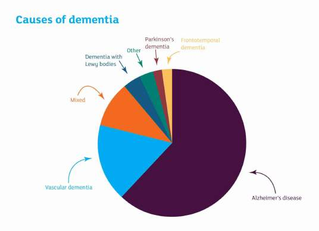
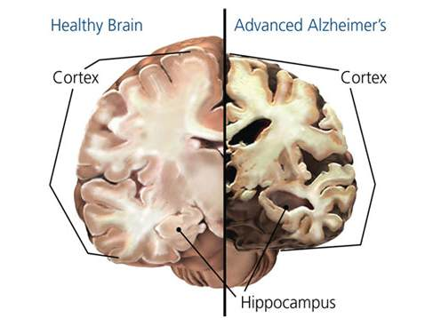
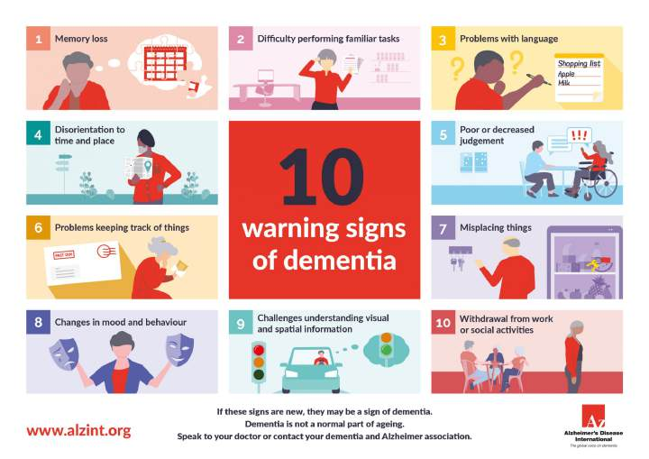
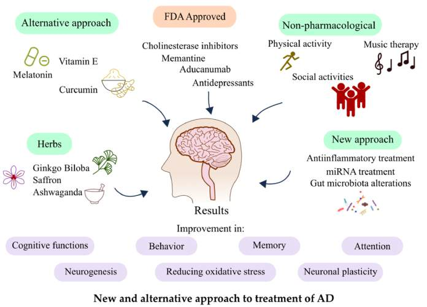

A foundational guide for HAND volunteers to understand neurological disorders and provide compassionate, informed care.
As you work with individuals with various neurological disorders, learning the backgrounds of these conditions will help you better interact and understand the people you encounter. In this section, we will focus on dementia, which is the most prevalent condition for Duke HAND volunteers to understand.
Neurological disorders describe a large variety of conditions that affect the brain, spinal cord, or nervous system. Some of the most common conditions are strokes, headaches, and dementia. These are typically very serious conditions that can impact memory, movement, behavior, and cognition.
When people use the terms "dementia" or "Alzheimer's disease," they can sometimes misunderstand their actual meanings. Dementia is an umbrella term that describes the brain disease that affects memory, thinking, and normal functioning. Alzheimer's disease is the most common cause of dementia, typically characterized by involving amyloid plaques or tau tangles.

While it is not necessarily important that you know the specific cause of dementia your patient has, we encourage you to explore the causes other than Alzheimer's disease if you have time!
Dementia affects millions of people worldwide and is largely considered a global health crisis, especially considering the aging population trends that we are seeing for many countries. According to WHO, dementia is the seventh largest cause of death globally, taking the lives of roughly two million people every year. This neurological condition not only impacts the individuals, but also their families and other support systems. Therefore, understanding the basics of dementia helps caregivers provide compassionate, informed support during this difficult time of life.
Dementia affects millions worldwide across every continent. Africa, Asia, and Latin America are seeing rapidly rising rates. In high-income countries, 1 in 14 people age 65+ has dementia. This is a truly global health crisis that touches families everywhere.
Before we can understand what goes wrong in dementia, it helps to have a basic picture of how a healthy brain works. Don't worry, you don't need to have taken a neuroscience class to follow along here!
Three brain regions are especially important when thinking about dementia. The first is the hippocampus, which plays a central role in forming new memories. The second is the cortex, which is the outer layer of the brain that is involved in higher-level thinking, decision-making, and language. Finally, the amygdala processes emotions and helps us respond to the world around us. As you'll see later, dementia can affect all three of these areas, which is why the condition impacts so much of a person's life.
Forms and processes new memories
Thinking, decision-making, and language
Processes emotions and emotional responses
Your brain is made up of billions of neurons that are constantly communicating with each other through chemical signals sent across synapses. These signals are responsible for just about everything: your mood, your ability to learn, and your memory. When this communication system is working well, everything runs smoothly, but when something disrupts it, the effects can be detrimental for an individual.
Not all memory issues mean dementia, which is important to understand as a volunteer. It's somewhat normal to experience forgetfulness with age, such as misplacing your keys or failing to remember someone's name. However, the key difference with dementia is that memory loss and confusion become severe enough to interfere with everyday life. This can include things like forgetting family members, getting lost in familiar places, or being unable to perform basic daily tasks. Hopefully, this distinction will help you approach your patients with increased understanding and empathy.
Alzheimer's disease is the most common cause of dementia. It is a progressive brain disorder, meaning symptoms gradually worsen over time. Understanding the basics of how it works will help you better connect with and support the patients you encounter.
In Alzheimer's, two abnormal proteins build up in the brain and damage neurons. First, amyloid plaques are clumps that form between brain cells and disrupt communication. Second, tau tangles are twisted fibers that build up inside the cells themselves and interfere with their ability to function. Together, these two changes cause brain cells to lose their connections to one another and eventually deteriorate. Over time, mass cell death causes parts of the brain to physically shrink — particularly the hippocampus, which is why memory loss is often one of the earliest and most noticeable symptoms of Alzheimer's.

Alzheimer's is typically described in three stages, each with its own set of symptoms. Knowing these stages will help you better understand where your patient is in their journey and how to interact with them most effectively.
Diagnosing dementia is not as simple as a single test and typically involves several steps. First, a doctor will review the patient's medical history and have a detailed discussion about their symptoms. From there, cognitive tests are used to assess one's memory, thinking, and problem-solving abilities. In some cases, brain imaging may also be used to get a clearer picture of what is happening inside the brain and rule out other potential causes.

Getting a diagnosis as early as possible makes a real difference. For families, it provides the time and information needed to plan ahead for care and make important decisions before the disease progresses. For patients, it opens the door to treatments and support services that can help manage symptoms and improve quality of life. Early diagnosis also gives patients the opportunity to participate in research studies, which not only may benefit them directly but also contributes to the broader effort to better understand and eventually treat dementia.
Families have time to make important decisions early
Opens the door to medications & support services
Contribute to and benefit from cutting-edge studies
Duke University is home to several world-class research labs actively working on Alzheimer's and dementia treatments. As a volunteer, you're part of a broader community committed to improving lives.
While there is currently no cure for dementia, patients have options and hope. Medications are available that can help manage symptoms, and newer treatments are being developed that aim to slow disease progression in some patients. Research in this area is very active, and the landscape of available treatments continues to evolve. If you are interested, there are many great labs here at Duke that are involved in researching Alzheimer's and related dementias!

Beyond medication, there are several non-medical approaches that have been shown to meaningfully improve quality of life for dementia patients. As a Duke HAND volunteer, many of your interactions will directly support these approaches, making your role more impactful and significant than you might realize!
Puzzles, reading, and conversation keep the mind active
Regular exercise supports both brain and body health
You play a huge role in combating isolation
Familiarity and predictability bring comfort and calm
Each time you engage with a patient—whether through conversation, a game, or simply being present—you are directly contributing to their mental stimulation and social engagement. These interactions have real and measurable benefits for their quality of life. Thank you for the incredible work you do!
You've learned the fundamentals of dementia, brain health, and treatment approaches. This knowledge will help you provide compassionate, informed care in your volunteer work.